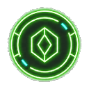

Niveau : 0
Pieces : 0

Coffre de recompense
?
+0
Guide rapide
Comment jouer
- Ecoute le signal audio gratuit pour trouver une premiere piste.
- Devine le mot cache avec les lettres proposees.
- Clique sur une lettre en bas pour l'ajouter dans la reponse.
- Clique sur une lettre deja posee dans le mot pour la retirer et corriger.
- Gagne des pieces avec le coffre, puis utilise-les pour deverrouiller les signaux 02 et 03.